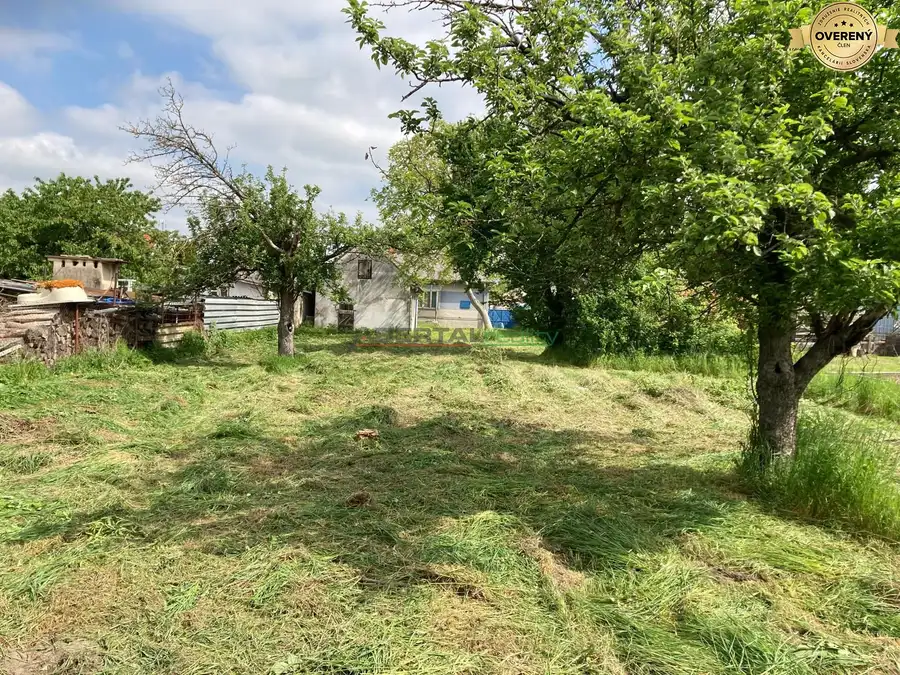
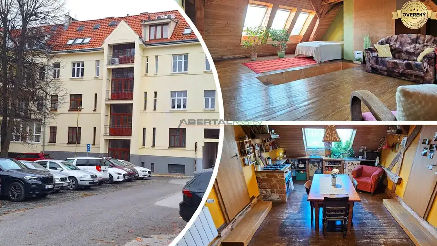

Predaj – veľký stavebný pozemok v Stupave
Stupava
- Plocha3352 m²
- Vlastníctvoosobné
O nehnuteľnosti
ABERTAL REALITY ponúka exkluzívne
na predaj veľký stavebný pozemok priamo v meste Stupava.
Pozemok má rozlohu 3352 m2 a je
určený na výstavbu rodinných domov.
Pozemok má prevažne rovinatý charakter a obdĺžnikový tvar /š cca 18m x d cca 196m/. Je súčasťou územia, pre ktoré je schválený územný plán zóny Stupava - Kopce. Hlavným funkčným využitím podľa UPI je málopodlažná bytová výstavba. Prístup k pozemku je vo vlastníctve obce Stupava.
LOKALITA
Mesto Stupava patrí v súčasnosti k vyhľadávaným lokalitám v okolí Bratislavy. Z hľadiska dopravnej dostupnosti patrí cestný ťah smerom do BA medzi najlepšie riešené, do centra Hlavného mesta sa dostanete autom za cca 20 minút. V obci nájdete kompletnú občiansku vybavenosť: materskú školu, základnú školu, umeleckú školu, zdravotné stredisko, lekáreň, potraviny, poštu, banky, kaviarne či reštaurácie. Aktívny relax priamo v meste ponúkajú tenisové kurty, futbalové ihrisko či wellness centrum. Cyklotrasy a turistické chodníky vás zase prevedú po miestnych lesoch a rybníkoch.
Stupava z východnej strany susedí s pohorím Malé Karpaty a turisticky obľúbeným hradom Pajštún. Svojimi turistickými možnosťami, množstvom cyklochodníkov a krásnymi zákutiami vhodnými na rodinné výlety, ponúka výborné miesto na aktívny odpočinok rodinám s deťmi ako aj náročným športovcom.
Cena pozemku 580 000eur. Pre viac informácií nás kontaktujte.
© Fotografie s textom sú autorským dielom a majetkom spoločnosti ABERTAL REALITY s.r.o.
Parametre
| Rozloha pozemku | 3352 m² |
|---|---|
| Celková rozloha | 3352 m² |
| Vlastníctvo | osobné |
| Terén | rovina |
| Dátum zverejnenia | 20. 4. 2021 |
Kde to je
Mohlo by Vás zaujímať

Pozemok7 199 900 €PREDAJ pozemok 2205 m², možnosť 3 parciel - Kuchyňa Záhorie Kuchyňa 3-izbový95 m² INVESTIČNÝ POZEMOK 2 205 m² S MOŽNOSŤOU ROZDELENIA NA 3 STAVEBNÉ PARCELY – KUCHYŇA, OKRES MALACKY ABERTAL REALITY ponúka na predaj investične…
Byt10 249 000 €Predaj - 3 izbový mezonetový byt, Letná ul. Košice - Staré mesto mestská časť Staré Mesto, Košice 3-izbový96 m²3. podlažie ABERTAL REALITY ponúka na predaj MEZONETOVÝ byt vo vyhľadávanej lokalite Košice - STARÉ MESTO Letnej ulici, v blízkosti Technickej univerzity. Byt má…